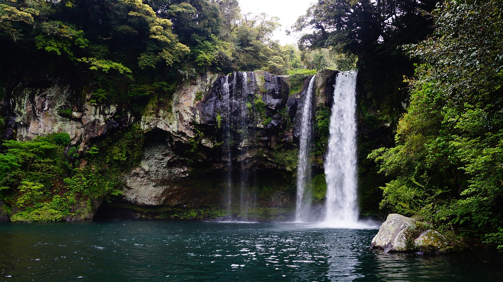

Sights
There is just so much to do and see when you go to Korea, that you'd have to spend at least a week or more to experience as much as you can throughout the whole country. Here are some of many different sights that you can see during your stay in Korea!
Seoul
Kyeongbokgung and Changdeokgung
Discover Korea's ancient palaces, located in Seoul. Experience what it would have been like to be a member of the royal family as you walk around the palace grounds, and try on a colourful hanbok, or the Korean traditional clothes!
Namdaemun
Visit Korea's most iconic landmark, Namdaemun, sitting right in the middle of the city. It is definitely hard to miss! Don't forget to stop by the Namdaemun market for affordable souvenirs and goods, especially if you are planning to travel on a budget!
Myeongdong
A modern shopping district, Myeongdong is a tourist haven for all. Come to Myeongdong and go shopping for different cosmetics, clothing, accessories and more products, all endorsed by your favourite Korean idols and actors!
Insadong
A district where you can immerse yourself into the traditional from the modern, Insadong offers you authentic traditional Korean food and products to try. Virtually all the shops are built in the style of hanok, a Korean-style house.
Namsan and Seoul Tower

Take the cable car up to the N Seoul Tower, standing all on top of Namsan Mountain in Seoul, where you can see great views of the whole city from up high. Don't forget to purchase a colourful padlock and make a wish along with your loved ones! For those of you into adorable stuff, the Teddy Bear Museum in the tower also awaits.
Gwanghwamun
Visit another of Korea's iconic squares, Gwanghwamun, where you shall meet the famous golden statue of King Sejong, the creator of the Korean alphabet, who waves hello to everyone who passes by.
Cheonggyecheon
Sit down and relax by the Cheonggyecheon, which flows into the Han River, the longest river of Korea. A popular recreation spot for locals, this is not only a place for relaxation, but to enjoy the vibrant lights that illuminate the river at night.
Lotte World
For those in search of leisure, your visit would not be complete without a visit to the Lotte World amusement park, full of wild rides and roller coasters to enjoy! Don't forget to stay to watch parades of traditional Korean dancers too!
Korean Folk Village

For history fanatics, this is the place for you. Immerse yourself in what it would have been like to live as a local in Korea 400 years ago and earlier. Visit traditional straw houses that commoners used to live in, appreciate different forms of traditional entertainment from dance to circus acts, and learn more about Korea's history.
Busan
Haeundae Beach
If you come to Korea in the summer, take a break from the hustle of the bustle of Seoul, and relax on the largest beach in Korea, located in Busan.
Jagalchi Market
Try out some fresh fish and seafood sold from this market. This market and other neighboring restaurants offer many delicacies like you've never seen.
Beomeosa Temple

Busan is home to many different kinds of Buddhist temples. Beomeosa is definitely one of them. Step into this temple, see different colourful sights, such as groups of lanterns, and enjoy vegetarian cuisines!
Suwon
Hwaseong Fortress
Come to Suwon and visit htet Hwaseong Fortress, a humongous fortress used to protect the enjoy from rebels. Don't forget to climb up and and ring the toll bell!
Seoraksan
Are you a fan of hiking? If so, Seoraksan is definitely the mountain for you! Located in the southern part of the country, this mountain offers beautiful hiking spots and amazing views from above. The best season to go hiking is in autumn, where you will vibrant colours of the autumn leaves.
Kyongju
Another place that has mostly Buddhist areas of worship. Visit the Buddhist Bulguksa Temple (left) and the Seokguram Grotto (right), more picturesque spots to see.
Jeju-do
Hallasan
On this volcanic island, visit the tallest mountain in South Korea. Once an active volcano, this is now an extinct one. Don't forget to go hiking up the trails and surround yourself with spectacular flower fields and meadows.
Cheonjiyeon Waterfall
Jeju-do, being a volcanic island, is famous for its spots made primarily out of volcanic rock. Visit the Cheonjiyeon Waterfall, a waterfall made of volcanic rock giving you a fabulous view.
Jeju Stone Park
Dolharubang, or "grandfather rock" in the local dialect of the island, are sculptures resembling elderly men made out of volcanic rock. You can find miniature versions of these in many souvenir stores on the island.
Seongsan Ilchulbong
A well known UNESCO Heritage Site of Korea. Hike up this cliff and reward yourself at the top with wondrous views of the oceans.